If we consider our digital audio samples  to correspond to
successive moments in time, then time shifting the signal by
to correspond to
successive moments in time, then time shifting the signal by  samples
corresponds to a
delay
of 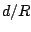 time units, where
samples
corresponds to a
delay
of 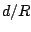 time units, where  is the sample rate.
Figure 7.3 shows one example of a
linear delay network:
an assembly of delay units, possibly with amplitude
scaling operations, combined using addition and subtraction. The output
is a linear function of the input, in the sense that adding two signals at the
input is the same as processing each one separately and adding the results.
Moreover, linear delay networks create no new frequencies in the output that
weren't present in the input, as long as the network remains time invariant,
so that the gains and delay times do not change with time.
is the sample rate.
Figure 7.3 shows one example of a
linear delay network:
an assembly of delay units, possibly with amplitude
scaling operations, combined using addition and subtraction. The output
is a linear function of the input, in the sense that adding two signals at the
input is the same as processing each one separately and adding the results.
Moreover, linear delay networks create no new frequencies in the output that
weren't present in the input, as long as the network remains time invariant,
so that the gains and delay times do not change with time.
In general there are two ways of thinking about delay networks. We can think
in the
time domain,
in which we draw waveforms as functions of time (or of the index  ), and
consider delays as time shifts. Alternatively we may think in the
frequency domain,
in which we dose the input with a complex sinusoid (so that its output is a
sinusoid at the same frequency) and report the amplitude and/or phase change
wrought by the network, as a function of the frequency. We'll now look at the
delay network of Figure 7.3 in each of the two ways in turn.
), and
consider delays as time shifts. Alternatively we may think in the
frequency domain,
in which we dose the input with a complex sinusoid (so that its output is a
sinusoid at the same frequency) and report the amplitude and/or phase change
wrought by the network, as a function of the frequency. We'll now look at the
delay network of Figure 7.3 in each of the two ways in turn.
| 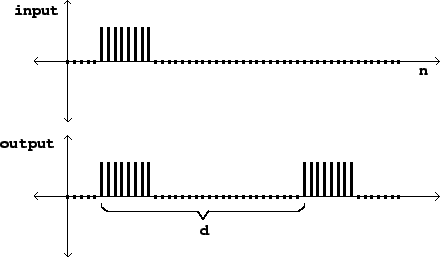 |
Figure 7.4 shows the network's behavior in the time domain. We
invent some sort of suitable test function as input (it's a rectangular pulse
eight samples wide in this example) and graph the input and output as functions
of the sample number  . This particular delay network adds the input to a
delayed copy of itself.
. This particular delay network adds the input to a
delayed copy of itself.
A frequently used test function is an
impulse,
which is a pulse lasting only one sample. The utility of this is that, if we
know the output of the network for an impulse, we can find the output for
any other digital audio signal--because any signal  is a sum of
impulses, one of height
is a sum of
impulses, one of height  , the next one occurring one sample later
and having height 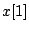, and so on. Later, when the networks get
more complicated, we will move to using impulses as input signals to show
their time-domain behavior.
, the next one occurring one sample later
and having height 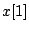, and so on. Later, when the networks get
more complicated, we will move to using impulses as input signals to show
their time-domain behavior.
On the other hand, we can analyze the same network in the frequency domain
by considering a (complex-valued) test signal,
| 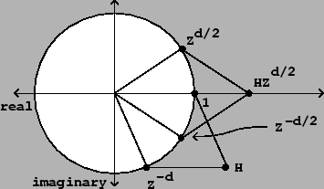 |
Figure 7.5 shows the result, in the complex plane, when the
quantities  and 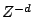 are combined additively. To add complex numbers
we add their real and complex parts separately. So the complex number
and 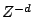 are combined additively. To add complex numbers
we add their real and complex parts separately. So the complex number  (real
part
(real
part  , imaginary part
, imaginary part  ) is added coordinate-wise to the complex
number (real part
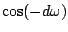, imaginary part
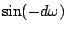). This is shown graphically by making a parallelogram,
with corners at the origin and at the two points to be added, and whose
fourth corner is the sum
) is added coordinate-wise to the complex
number (real part
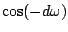, imaginary part
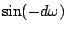). This is shown graphically by making a parallelogram,
with corners at the origin and at the two points to be added, and whose
fourth corner is the sum  .
.
As the figure shows, the result can be understood by symmetrizing it about
the real axis: instead of  and , it's easier to sum the
quantities 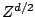 and 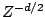, because they are symmetric about
the real (horizontal) axis. (Strictly speaking, we haven't properly defined
the quantities and ; we are using those expressions
to denote unit
complex numbers whose arguments are half those of 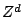 and , so
that squaring them would give and .)
We rewrite the gain as:
and , it's easier to sum the
quantities 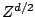 and 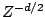, because they are symmetric about
the real (horizontal) axis. (Strictly speaking, we haven't properly defined
the quantities and ; we are using those expressions
to denote unit
complex numbers whose arguments are half those of 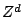 and , so
that squaring them would give and .)
We rewrite the gain as:
Since the network has greater gain at some frequencies
than at others, it may be considered as a
filter
that can be used to separate certain components of a sound from others.
Because of the shape of this particular gain expression as a function of
 , this kind of delay network
is called a (non-recirculating)
comb filter.
, this kind of delay network
is called a (non-recirculating)
comb filter.
| 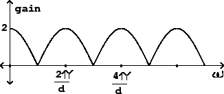 |
The output of the network is a sum of two sinusoids of equal amplitude, and
whose phases differ by 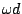. The resulting frequency response agrees
with common sense: if the angular frequency  is set so that an integer
number of periods fit into
is set so that an integer
number of periods fit into  samples, i.e., if
samples, i.e., if  is a multiple of
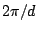, the output of the delay is exactly the same as the original signal,
and so the two combine to make an output with twice the original amplitude. On
the other hand, if for example we take
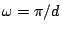 so that the delay is
half the period, then the delay output is out of phase and cancels the input
exactly.
is a multiple of
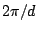, the output of the delay is exactly the same as the original signal,
and so the two combine to make an output with twice the original amplitude. On
the other hand, if for example we take
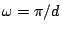 so that the delay is
half the period, then the delay output is out of phase and cancels the input
exactly.
This particular delay network has an interesting application: if we have a
periodic (or nearly periodic) incoming signal, whose fundamental frequency is
 radians per sample, we can tune the comb filter so that the peaks in
the gain are aligned at even harmonics and the odd ones fall where the gain is
zero. To do this we choose 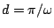, i.e., set the delay time to exactly
one half period of the incoming signal. In this way we get a new signal whose
harmonics are
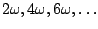, and so it now has a new
fundamental frequency at twice the original one. Except for a factor of two,
the amplitudes of the remaining harmonics still follow the spectral envelope of
the original sound. So we have a tool now for raising the pitch of an incoming
sound by an octave without changing its spectral envelope. This octave doubler
is the reverse of the octave divider introduced back in Chapter
5.
radians per sample, we can tune the comb filter so that the peaks in
the gain are aligned at even harmonics and the odd ones fall where the gain is
zero. To do this we choose 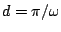, i.e., set the delay time to exactly
one half period of the incoming signal. In this way we get a new signal whose
harmonics are
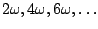, and so it now has a new
fundamental frequency at twice the original one. Except for a factor of two,
the amplitudes of the remaining harmonics still follow the spectral envelope of
the original sound. So we have a tool now for raising the pitch of an incoming
sound by an octave without changing its spectral envelope. This octave doubler
is the reverse of the octave divider introduced back in Chapter
5.
The time and frequency domains offer complementary ways of looking at the same delay network. When the delays inside the network are smaller than the ear's ability to resolve events in time--less than about 20 milliseconds--the time domain picture becomes less relevant to our understanding of the delay network, and we turn mostly to the frequency-domain picture. On the other hand, when delays are greater than about 50 msec, the peaks and valleys of plots showing gain versus frequency (such as that of Figure 7.6) crowd so closely together that the frequency-domain view becomes less important. Both are nonetheless valid over the entire range of possible delay times.